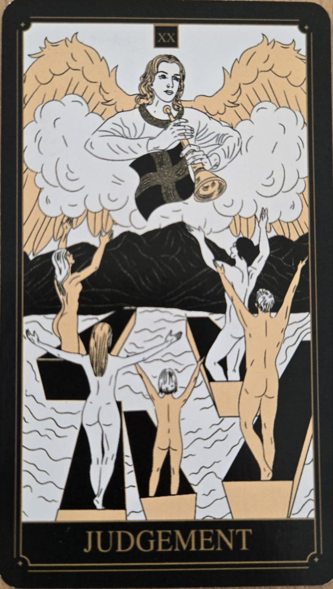

Súd predstavuje prebudenie, uvedomenie a hodnotenie vlastnej cesty. Je spojený s významnými životnými rozhodnutiami a novými začiatkami.
Táto karta často prichádza v období, keď človek vidí svoju minulosť z nového pohľadu.
Karta symbolizuje sebapoznanie, zodpovednosť a schopnosť poučiť sa z minulosti.
Naznačuje okamih, keď je možné uzavrieť staré kapitoly a vykročiť ďalej.
Na karte býva anjel trúbiaci na trúbu, ktorý symbolizuje prebudenie a nový začiatok.
Postavy vstávajúce zo zeme predstavujú obnovu a transformáciu.
Názov karty môže znieť prísne, no jej význam sa viac spája s pochopením než s odsúdením.